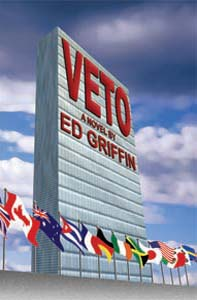

|
VETO The Secretary-General of the United Nations – a woman? Pilar Marti is a UN bureaucrat who rises above her limitations to become a great Secretary-General, one who transforms the UN from inertia to dynamism, from control by five veto countries to a representative world body. Pilar grows with the job, becoming a take-charge person who breaks out of the church-like UN building and confronts the world's problems. When the United States vetoes a food and water proposal for Somalia, Pilar calls for a Constitutional Convention to eliminate the veto and reform the UN. She attacks the veto with an unusual weapon – the American Constitution. What's good for America – democracy – is good for the UN. With a devoted bodyguard and idealistic young people, she campaigns worldwide, but especially in America. A nervous CIA and a power-hungry Washington elite respond with intrigue, harassment, diplomatic maneuvers, and ultimately attempts on her life. The Author A lifelong student of the United Nations, Ed Griffin was initially inspired by the words of Pope John XXIII about the UN in his letter, Pacem in Terris. (Section 142). But, why hasn't the UN lived up to its expectations? What's wrong with it? What's missing? Leadership, that's the key, Griffin feels. Too many smooth words, too many compromises that allow genocide, too much control by rich nations. Griffin proposes a woman who becomes a true leader – Pilar Marti, a UN bureaucrat who rises to the office she finds herself in. History often tells such stories – the haberdasher, Harry Truman, who became a great president; the schoolteacher, Golda Meir, who led Israel in difficult times; and the party official, Michel Gorbachev, who introduced wide reforms in Russia. Read the Opening Chapter of VETO To purchase a copy, go to Cordillera North Publications. A printed copy, signed by the author, is $15.00. Shipping is $10.00. The ebook version is $2.99. |
|
© Copyright Ed Griffin 2003. All rights reserved. |